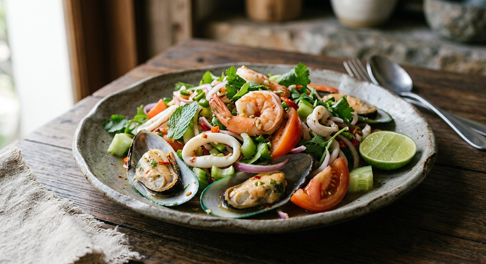

Blanched prawns, squid and whatever else the sea offered, tossed in a mortar-built dressing of chilli, fish sauce, lime and sugar — sour, salty, sweet and properly hot.

ยำทะเล is the Isaan salad logic applied to the sea: seafood blanched just long enough to cook, then tossed through a dressing pounded fresh in the mortar. ยำ (yam) is the family of Thai sour-spicy salads; ทะเล (thale) is the sea. Prawns and squid are the fixed cast; everything after that depends on the catch and the cook.
The dressing is the dish. Pa Thanawan pounds chilli and garlic first, builds fish sauce, lime and sugar into the mortar, and only then folds in the blanched prawns, squid and crab sticks. Kapook's restaurant recipe does the same, but folds in two spoons of cooked pla ra and serves it with khanom jeen and lime wedges — the vendor's version, deeper and funkier. Benenatty's family pot adds slices of moo yor and stops at a squeeze of half a lime. Longdan's recipe takes the whole thing to the noodle-salad end of the spectrum, on a bed of vermicelli with a measured three-three-three dressing.
The rules that hold across all of them: blanch the seafood once, briefly; build the dressing in the mortar; correct it by taste before the seafood goes in; fold the herbs last. Everything else is open water.
| Thai | English | Amount |
|---|---|---|
| กุ้ง | Prawns | 200–400 g |
| ปลาหมึก | Squid, scored and cut | 1 medium |
| หอยแมลงภู่ (ไม่บังคับ) | Mussels (optional) | a handful |
| พริกขี้หนู + กระเทียม | Bird's eye chillies and garlic, pounded | 5–8 chillies, 2 cloves |
| น้ำปลา | Fish sauce | 2–3 tbsp |
| น้ำมะนาว | Lime juice | 2–3 tbsp |
| น้ำตาลทราย | Sugar | 1–2 tbsp |
| หอมแดง / หอมใหญ่ | Shallots or onion, sliced | 2 shallots or ½ onion |
| มะเขือเทศ + แตงกวา + ขึ้นฉ่าย | Tomato, cucumber and Chinese celery | 1 tomato, ½ cucumber, 2–3 stalks |
| ผักชี + สะระแหน่ | Coriander and mint | a handful |
The restaurant pot (Kapook): squid, prawns and a kilo of mussels tossed with cooked pla ra (2 tbsp), pounded jinda chillies and the dressing, served with khanom jeen and lime wedges. The family pot (Wongnai, Pa Thanawan): prawns, squid and crab sticks — dressing pounded in the mortar first, seafood blanched and folded in. The noodle salad (Longdan): vermicelli, cucumber, carrot, beansprouts and herbs with a 3:3:3 dressing of fish sauce, lime and sugar plus sesame oil, peanuts on top.
Noodles or not. Longdan's version is built on vermicelli; the Wongnai and Kapook pots have no noodles at all (Kapook serves khanom jeen on the side instead). A yum thale in Thailand is normally a naked salad — the noodle version is a fuller meal.
What swims in it. The core is always prawns and squid. After that it is open season: mussels by the kilo (Kapook), crab sticks (Pa Thanawan), sliced moo yor — the pink Vietnamese pork loaf — (Benenatty). Seafood availability, not doctrine, decides.
Pla ra. Kapook's restaurant recipe folds in two spoonfuls of cooked pla ra for depth; the home recipes use none. It is the difference between the vendor's version and the kitchen-table one.
The dressing ratio. Longdan is exact — three parts fish sauce, three parts lime, three parts sugar. The Wongnai home cooks season by the ladle and spoon and correct by taste. Both arrive at the same sharp-sweet-salty triangle.
How the chilli goes in. Pounded in the mortar with the garlic (Pa Thanawan, Kapook) versus sliced and tossed in whole (Longdan's salad method). Pounding carries the heat through the dressing; slicing leaves it in bursts.
This recipe is translated from the following Thai-language sources. Where they disagree, we've said so.
1. Wongnai — "ยำทะเล" by แซ่บนัว By Pa Thanawan (the prawn, squid and crab-stick pot used here) — wongnai.com
2. Wongnai — "ยำรวมมิตรทะเล" by Benenatty (the moo-yor pot) — wongnai.com
3. Kapook Cooking — "19 เมนูร้านยำ" roundup (the restaurant-style pot with pla ra and khanom jeen) — cooking.kapook.com
4. Longdan — "วิธีทำยำรวมมิตรทะเล" (the vermicelli noodle version, adapted from BBC Food) — longdan.co.uk